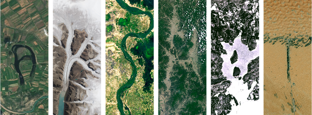
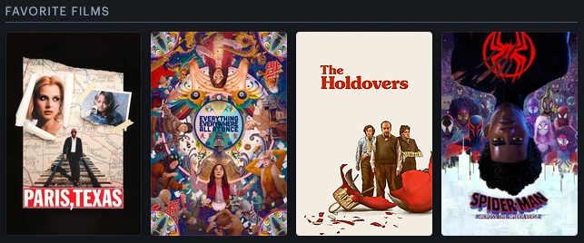

Graduate Research Assistant
Georgia State University
"We're still pioneers, and we've barely begun. Our greatest accomplishments cannot be behind us, cause our destiny lies above us."
— Cooper, Interstellar
About Me


I currently live in Atlanta, Georgia. I'm originally from India, but have at various points lived in Pennsylvania (where I went for my undergraduate studies), Tanzania, the UAE, and Uganda.
Movies
I love watching movies, specifically 90's action movies, and I am a big fan of Wim Wenders as well. Follow me on Letterboxd to see what I've watched most recently!

Football
I enjoy playing and watching football, and I am a huge Liverpool fan (Allez, allez, allez).
Photography
I have been a photographer since I was 11 years old, and still continue to find time for this hobby. I specifically like to take pictures of landscapes and wildlife (I've gotten particularly into bird-watching in the past few years). You can learn more and find some pictures I am particularly proud of on my photography page
Music
I like a lot of different genres of music, but particularly like folk and indie rock. Some of my favorite artists are MGMT, The Killers, and Florence + The Machine. I'm currently listening to:
Reading
I've enjoyed reading my whole life, but went through an unwilling hiatus in college. Since then, however, I've gotten back into it. I enjoy books of all kind, but particularly like literary fiction, family sagas, and sci-fi. You can find what I'm currently reading below, and follow me on Goodreads!